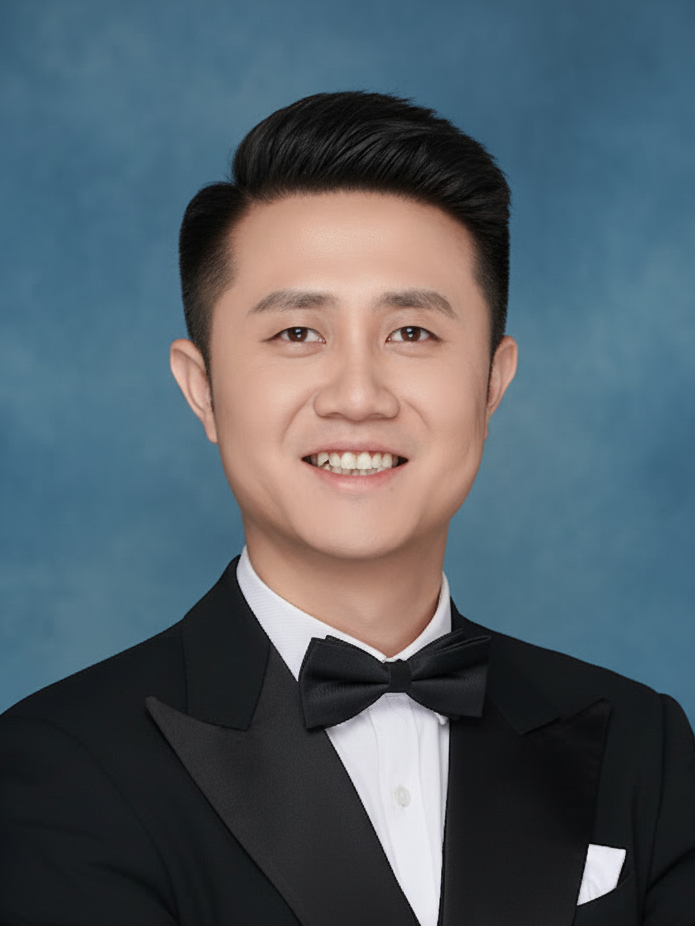

01学习求解
学习优化
机器学习辅助优化求解
将机器学习融入数学规划与组合优化，研究预求解、分支、割平面选择与实例生成。
数学规划强化学习组合优化
查看相关论文 ↗
指导团队获第十九届“挑战杯”专项赛特等奖
组合优化、求解器配置与高效多模态生成
ICML 2026 金牌审稿人
研究可学习的求解方法，
面向大模型时代的复杂问题。
全部署名 · 按 CCF 分类展示 · 保留论文、代码与报告资源
完整论文及预印本档案 ↗2018—2024 年在华为诺亚方舟实验室从事研究。参与将机器学习方法应用于优化求解与工业系统。
第十九届“挑战杯” · 2025
指导学生团队参与科研与竞赛实践
学生成果包括 NeurIPS 2025 论文、学院优秀毕业论文、致远荣誉本科学位等。
硕士 · CSCWD 2026
毕业去向：中国航空工业集团
欢迎对学习优化、大模型优化与推理、
具身智能感兴趣的同学联系我。
具身智能平台 / GPU / NPU / CPU
浏览论文列表，找到你感兴趣的问题。
通过邮件发送简历，并介绍你的研究兴趣。
邮件沟通后预约进一步讨论。